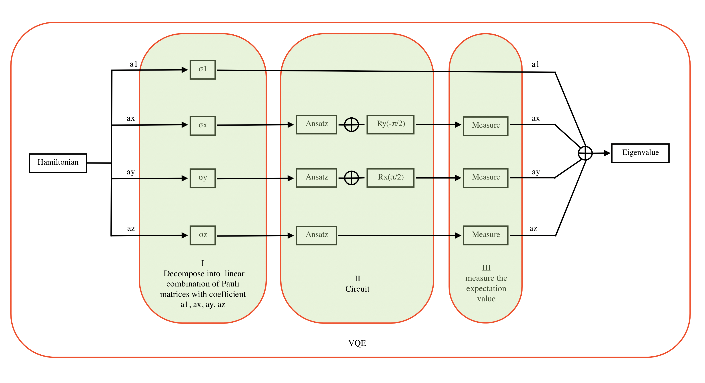

Webots is a professional software platform designed for the simulation of mobile robots and autonomous systems. It offers users the ability to model, design, and test various types of robots, including those utilized in manufacturing, service, and entertainment applications, as well as drones, self-driving vehicles, and other autonomous systems. The platform provides a 3D physics-based environment for simulation, including support for various sensor types, communication protocols, and programming languages, as well as tools for data visualization and analysis and the import and export of models and simulations. This blog aims to assist you in getting started with Webots.

“VQE” stands for “Variational Quantum Eigensolver.” It is an algorithm that uses quantum computers to find the lowest-energy eigenstate (also known as the ground state) of a given Hamiltonian. The Hamiltonian is a mathematical representation of a physical system, and the ground state represents the lowest-energy configuration of that system.
The VQE algorithm can be broken down into three main parts:- Decomposition: This involves breaking the Hamiltonian down into a sum of simpler terms, each of which can be represented by a quantum circuit. This allows the VQE to work with the Hamiltonian in a more efficient way.
-
Circuit: The circuit is the quantum part of the VQE algorithm. It consists of two main components:
- Ansatz: This is a quantum circuit that is used to prepare the initial state of the system. The ansatz is chosen so that it is easy to modify and can be efficiently prepared on a quantum computer.
- Initializing measurement basis: This involves preparing a set of measurement bases, which are used to measure the state of the system after the ansatz has been applied.
- Measurement: After the ansatz and measurement basis have been prepared, the VQE measures the state of the system using the measurement bases. The measurement results are then used to update the parameters of the ansatz, and the process is repeated until the ground state is found.